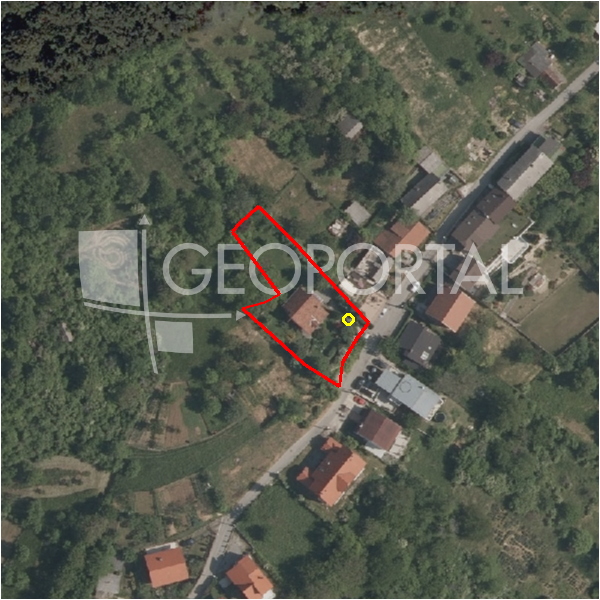

#546 · Gradilište Markuševec 1119 m2 prodaja ili zamjena za apartman na moru
Markuševec, Podsljeme, Grad Zagreb · zemljiste · njuskalo · status active · oglas ↗
Ocjena
- Score
- 67 rule 67 · LLM – · 12.09.2026.
- RLV
- 138.000 € (118 €/m²) · ratio 1,55
- Ukupna investicija
- 1,01 M€
- GBP
- 450 m²
- Feedback
- –
- CRM
- –
Sažetak: Prodaje se gradilište (voćnjak) od 1.119 m² u građevinskoj zoni na Markuševcu za 89.520 € (80 €/m²), uz mogućnost dokupa dodatne površine ili zamjene za apartman na moru. Plus je niska cijena i blizina grada, a rizik je što po oglasu gradnja zgrade s više stanova zahtijeva dokup dodatnih kvadrata.
Oglas
- Cijena
- 89.000 € (80 €/m²)
- Površina
- 1.119 m² · DKP 1.168 m² (odstupanje 4,4 %)
- Prodavatelj
- privatno
- Prvi put
- 10.09.2026. · zadnje 11.09.2026. · 1 d na tržištu
Povijest cijene
| Datum | Cijena |
|---|---|
| 10.09.2026. | – |
| 10.09.2026. | 89.000 € |
Flagovi
zone_uncertainty zona nije pregledana (reviewed: false) (−5)djelomicno_gradivo djelomicno_gradivo
gbp_ogranicen gbp_ogranicen
llm_pending LLM ekstrakcija/ocjena nedostupna
Komponente score-a
| rlv | {'gbp': 450.0, 'kis': 1.2, 'nkp': 369.0, 'noi': None, 'rlv': 137740.30434782617, 'ratio': 1.5476438690766985, 'value': None, 'phases': 1, 'profile': 'zagreb_visestambeno', 'gdv_neto': 1269360.0, 'cost_soft': 29700.0, 'gdv_bruto': 1586700.0, 'kis_known': True, 'total_inv': 1012790.0, 'cost_build': 742500.0, 'cost_other': 146250.0, 'cost_sales': 47601.0, 'demolition': False, 'gbp_source': 'cap:max_units=3', 'rlv_per_m2': 117.8889791489367, 'parcel_area': 1168.39, 'parcelation': False, 'roi_on_cost': 0.20633003880370065, 'profit_at_ask': 208969.0, 'cost_demolition': 0.0, 'total_inv_phase': 1012790.0, 'parcel_area_effective': 755.94833, 'sale_price_per_m2_nkp': 4300.0} |
| hard | [] |
| info | ['djelomicno_gradivo', 'gbp_ogranicen', 'llm_pending'] |
| rubric | {'permits': {'max': 10.0, 'detail': {'permit': 'none'}, 'points': 0.0}, 'physical': {'max': 10.0, 'detail': {'slope_pct': None, 'slope_points': 2.0}, 'points': 2.0}, 'liquidity': {'max': 10.0, 'detail': {'n_cuts': 0, 'points_cut': 0.0, 'points_days': 0.06666666666666667, 'seller_type': 'privatno', 'points_fresh': 1.0, 'price_cut_pct': None, 'days_on_market': 2, 'points_private': 2.0}, 'points': 3.07}, 'rlv_ratio': {'max': 40.0, 'detail': {'rlv': 137740, 'ratio': 1.548, 'asking_price': 89000.0}, 'points': 40.0}, 'zone_quality': {'max': 15.0, 'detail': {'no_upu': True, 'source': 'gis', 'zone_class': 'stambeno', 'zone_ideal': True, 'gp_uredjeni': True}, 'points': 12.0}, 'price_vs_benchmark': {'max': 15.0, 'detail': {'source': 'auto:Podsljeme', 'deviation': 0.503, 'ask_eur_m2': 80, 'benchmark_eur_m2': 160.0}, 'points': 15.0}} |
| weights | {'llm': 0.4, 'rule': 0.6, 'model': 0.0} |
| penalties | {'zone_uncertainty': 5} |
| raw_score | 72,1 |
| rlv_notes | ['gradivo 65 % čestice (756 m²) — ostatak izvan gradive zone', 'GBP 907 → 450 m² (ograničenje max_units=3)'] |
| flag_notes | {'max_gbp': 1402, 'total_inv': 1012790, 'zone_code': 'S', 'zone_class': 'stambeno', 'zone_source': 'gis', 'zone_reviewed': False, 'commercial_pct': 0.0, 'commercial_source': 'zone_rule'} |
| caps_applied | [] |
GIS
- Čestica
- k.o. 335347, k.č. 13090 (pin_buffer, 0,93); k.o. 335347, k.č. 13208 (pin_buffer, 0,83); k.o. 335347, k.č. 13187/3 (pin_buffer, 0,81)
- Zona
- S (stambeno) · NIJE pregledana
- kig / kis / katnost
- 0,30 / 1,20 / Po+P+2+Pk
- GP / UPU
- uredjeni · UPU ne
- Pristup / nagib
- unknown · – % (max – %)
- More
- –
- Zaštite
- Natura ne · zaštićeno ne · kulturno dobro ne
- Zgrade na čestici
- 14 %
- Match
- 0,93
Karta
Ortofoto (DOF)

RLV kalkulacija — pretpostavke
| gbp | {'value': 450.0, 'source': 'cap:max_units=3'} |
| kis | {'value': 1.2, 'source': 'gis'} |
| soft_pct | {'value': 0.04, 'source': 'profil'} |
| nkp_ratio | {'value': 0.82, 'source': 'profil'} |
| cost_other | {'value': 146250.0, 'source': 'profil: doprinosi+uređenje po m² GBP, financiranje+rezerva % gradnje'} |
| zone_share | {'value': 0.647, 'source': 'gis'} |
| parcel_area | {'value': 1168.39, 'source': 'dkp'} |
| asking_price | {'value': 89000.0, 'source': 'oglas'} |
| margin_on_cost | {'value': 0.15, 'source': 'profil'} |
| build_cost_per_m2_gbp | {'value': 1650.0, 'source': 'profil'} |
| sale_price_per_m2_nkp | {'value': 4300.0, 'source': 'benchmark:seed:Podsljeme'} |
| transfer_tax_and_acquisition | {'value': 0.06, 'source': 'profil'} |
Ekstrakcija iz oglasa
| permit | none |
| negotiable | yes |
| zone_claim | građevinsko |
| sea_row_claim | none |
| building_on_parcel | none |
Opis oglasa
Prodaje se gradilište 1119 m2 između Gračana i Markuševca u blizini Markuševečke ceste. Gradilište je voćnjak u građevinskoj zoni, te se sukladno Zakonu o gradnji može izgraditi voćarska kuća od 60 m2 + 20 m2 nadkrivene terase + podrum i uživati u vikendici nadomak centra grada ili ishoditi građevinsku dozvolu i izgraditi stambenu kuću, te uživati u zelenoj oazi u neposrednoj blizini centra grada,parka prirode,Sljemenske žičare.....itd. Sve ovisi o Vašim potrebama ili željama. Ako je potrebno moguće je kupiti i više kvadrata pa se može izgraditi zgrada ili urbana vila sa nekoliko stanova. Moguća zamjena za apartman, garsonjera-studio apartman na moru Karlobag i okolica - Baške Oštarije-vikendica,gradilište zemljište,cijena u zamjeni po dogovoru jer prednost ima gotovinsko plačanje. Cijena je 80 eur. za m2 ili 1119 m2 x 80 eur.= 89520 eur. Sve dodatne inf. na broj 091 631 1969